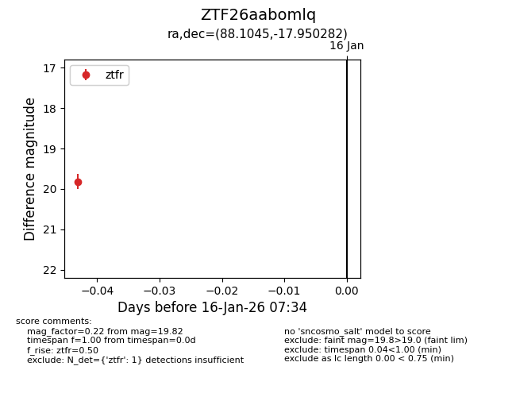
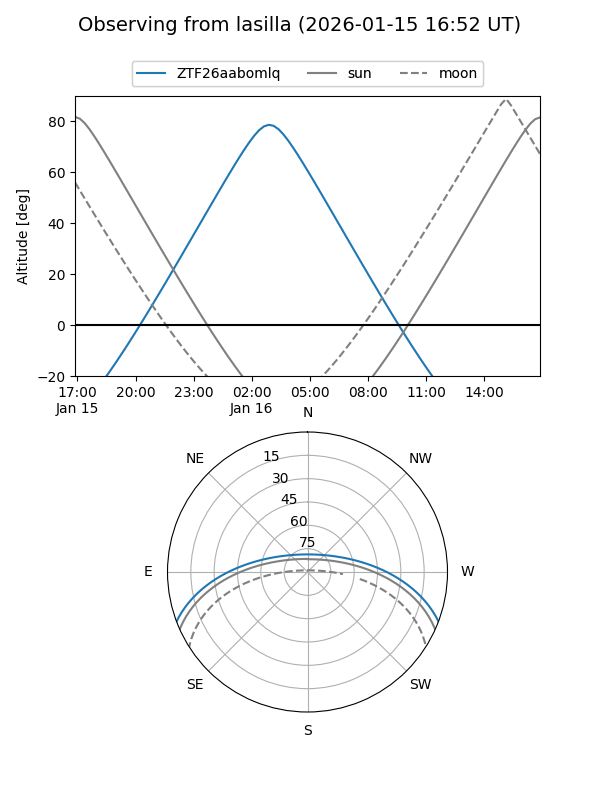
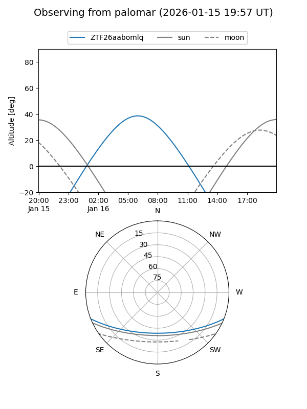

ZTF26aabomlq
Target ZTF26aabomlq at 2026-01-16 07:37
Aliases and brokers:
FINK: link
Lasair: link
ALeRCE: link
alt names
ZTF26aabomlq (ztf,fink_ztf)
Coordinates:
equatorial (ra, dec) = 88.1045,-17.95028
equatorial (HMS+DMS) = 05:52:25.09,-17:57:01.01
galactic (l, b) = (223.0282,-20.86480)
Flags:
Photometry:
last ztfr=19.82
1 ztfr detections
Lightcurve

Visibility


Additional plots